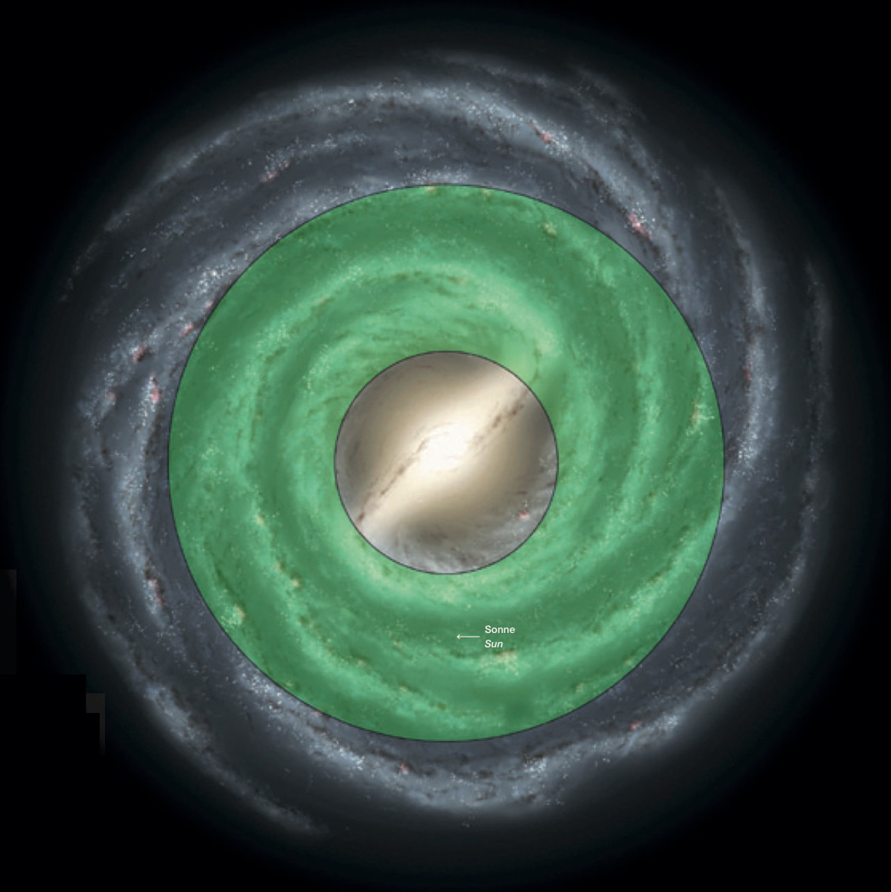
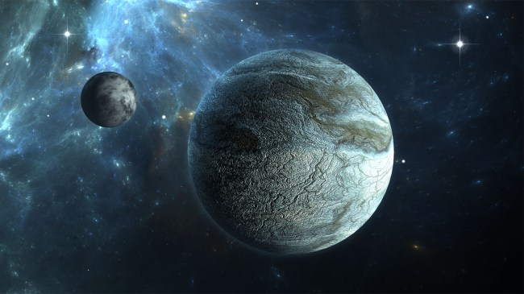
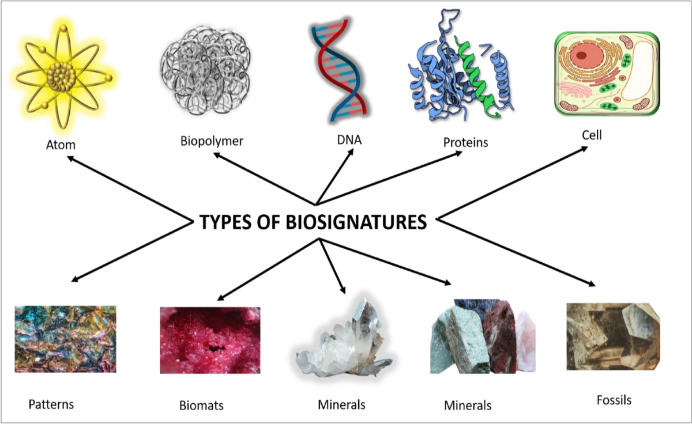
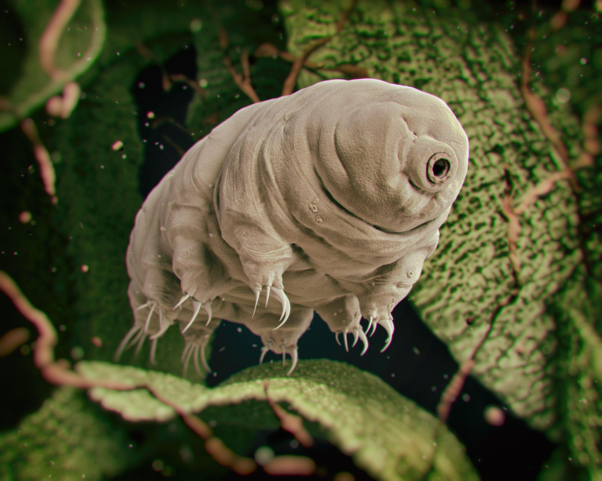
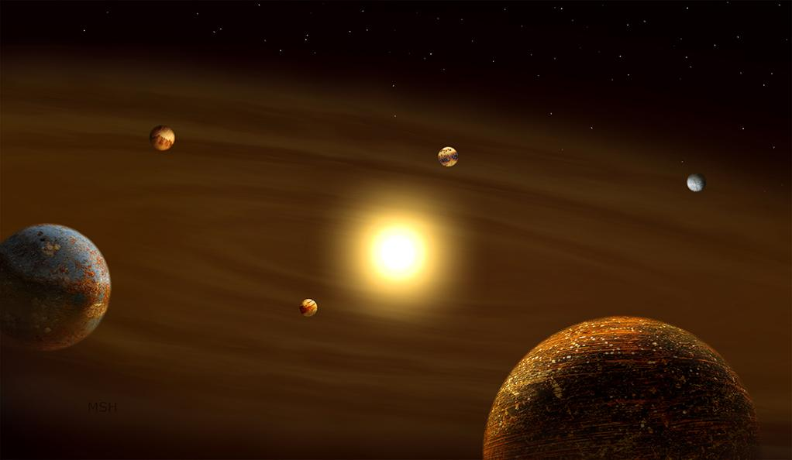
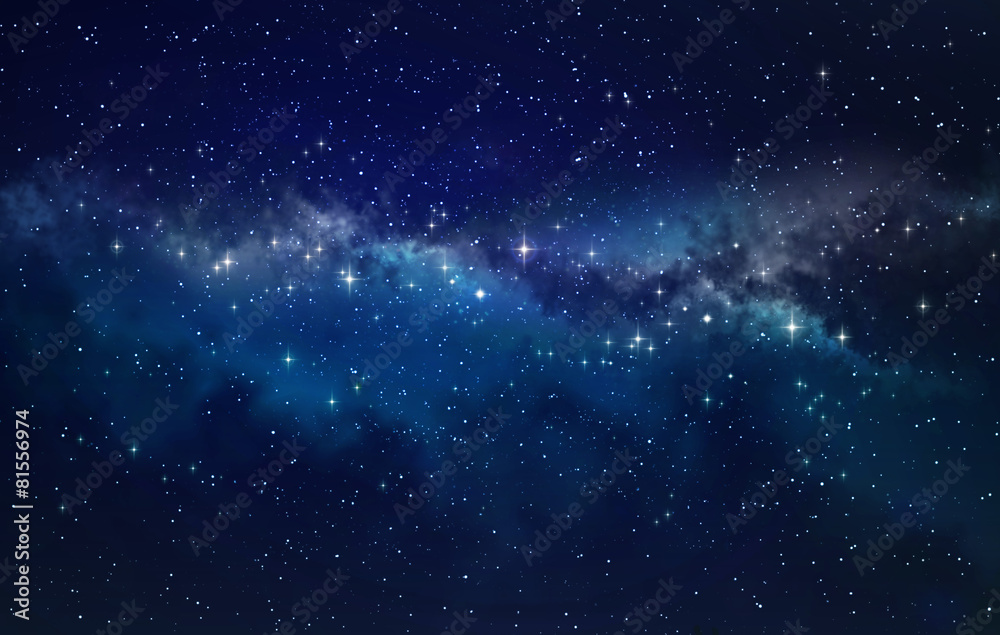
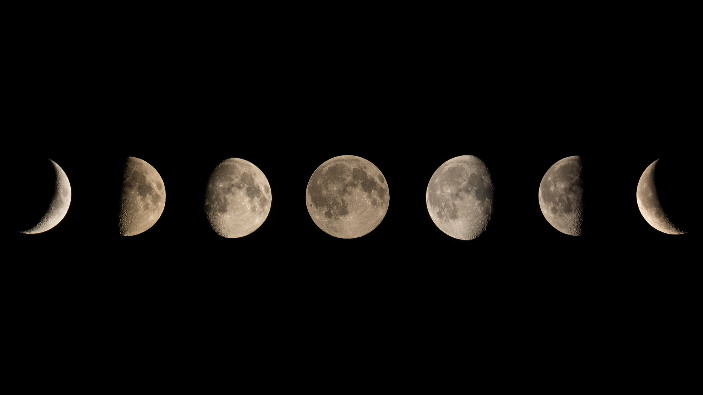
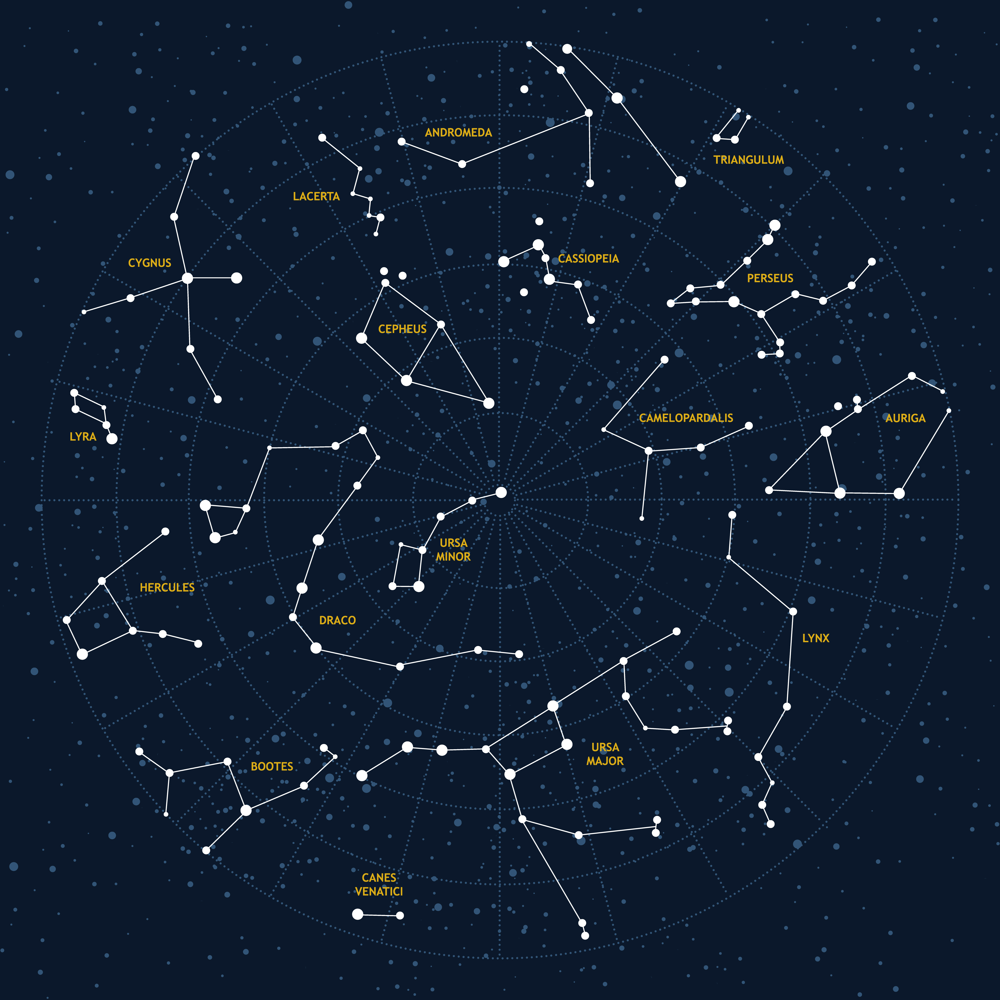
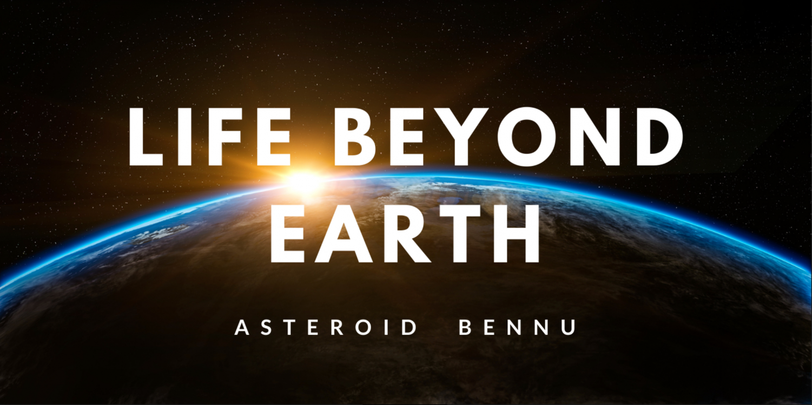

Explore how life might arise, survive, and be discovered among the stars.
Astrobiology is the study of life in the universe — how it begins, how it evolves, and where it might exist beyond Earth. Here you’ll explore molecules, habitable zones, exoplanets, biosignatures, extremophiles, planetary systems, stars, moons, constellations, and the search for life beyond Earth.
Life, as we know it, is built from molecules that store and process information, use energy, and maintain order. Astrobiologists look at how simple chemical building blocks — like water, carbon-based molecules, and energy sources — can assemble into complex systems capable of metabolism, growth, and reproduction. On early Earth, environments such as oceans, volcanic regions, and hydrothermal vents may have provided the right conditions for chemistry to become biology.
Quiz available
A habitable zone around a star is the region where temperatures allow liquid water to exist on a planet’s surface — not too hot, not too cold. There are also ideas of a “galactic habitable zone,” regions in a galaxy where conditions such as radiation levels, heavy element abundance, and stellar density may be more favorable for life. Astrobiologists study how distance from a star, type of star, and planetary atmosphere all work together to create environments where water can remain liquid and chemistry can flourish.
Quiz available
Exoplanets are planets orbiting stars beyond our Sun. Scientists detect them using several methods. The transit method measures tiny dips in a star’s brightness when a planet passes in front of it. The radial velocity method looks at how a star “wobbles” due to a planet’s gravity. Direct imaging uses powerful telescopes to capture faint light from planets themselves. By combining these techniques, astronomers can estimate a planet’s size, orbit, temperature, and sometimes even hints of its atmosphere.
Quiz available
Biosignatures are signs that might indicate life, such as specific gases in an atmosphere (like oxygen and methane together), unusual chemical patterns, or structures like fossils and biomats. Astrobiologists study how living systems change their environment — for example, by producing gases, altering minerals, or leaving behind complex organic molecules. When we analyze light from distant planets, we look for spectral fingerprints that suggest chemistry that is hard to explain without biology.
Quiz available
Extremophiles are organisms that thrive in extreme environments: boiling hot springs, deep ocean pressure, intense radiation, strong acidity, or freezing ice. Tardigrades, for example, can survive dehydration, radiation, and even exposure to space. These organisms show that life is far more adaptable than we once thought. For astrobiology, extremophiles expand the range of environments where we might expect life to exist — including underground, under ice, or in harsh alien conditions.
Quiz available
Planetary systems form from rotating disks of gas and dust around young stars. Over millions of years, particles collide and stick together, growing into planetesimals and then planets. Some systems are compact, with many planets close to their star; others have wide orbits and massive gas giants. Astrobiologists study how different system architectures affect the chances for habitable worlds, stable climates, and long-term conditions where life could emerge and persist.
Quiz available
Stars are born in giant clouds of gas and dust called nebulae. Gravity pulls material together until nuclear fusion ignites in the core, producing light and heat. Most of a star’s life is spent on the main sequence, steadily fusing hydrogen. Later, stars evolve into red giants or supergiants, and some end their lives in spectacular supernova explosions. The remnants — white dwarfs, neutron stars, or black holes — enrich space with heavy elements that can later form planets and, potentially, life.
Quiz available
Moons can be more than just companions to planets — some may hide global oceans beneath ice. In our solar system, worlds like Europa and Enceladus are prime candidates for subsurface oceans, warmed by tidal forces. Studying our own Moon’s phases helps us understand orbits, illumination, and how moons interact with their planets. Ocean worlds are especially exciting for astrobiology because liquid water, energy sources, and protective ice shells could create stable environments for life.
Quiz available
Constellations are patterns that humans use to organize the night sky. Different cultures created their own constellations and stories. Modern astronomy uses precise coordinate systems — right ascension and declination — to map the positions of stars, planets, and galaxies. Star charts and sky maps help observers find objects and understand how the sky changes with time, location, and season.
Quiz available
Life beyond Earth could exist in many forms — from simple microbes under ice to complex ecosystems on distant exoplanets. Astrobiologists combine data from telescopes, spacecraft, and laboratory experiments to search for biosignatures, study planetary environments, and understand how life might adapt to alien conditions. Worlds like Mars, Europa, Enceladus, and thousands of exoplanets are all part of this grand investigation into whether the universe is home to many forms of life, not just ours.
Quiz availableStarlight is your virtual space expert — guiding you through the science behind every lesson in this classroom.